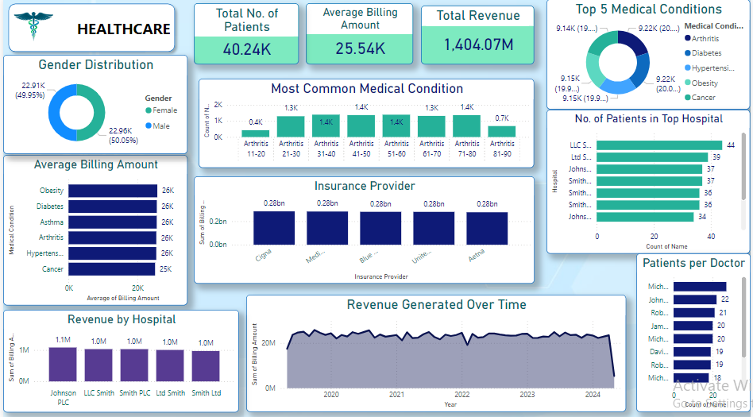
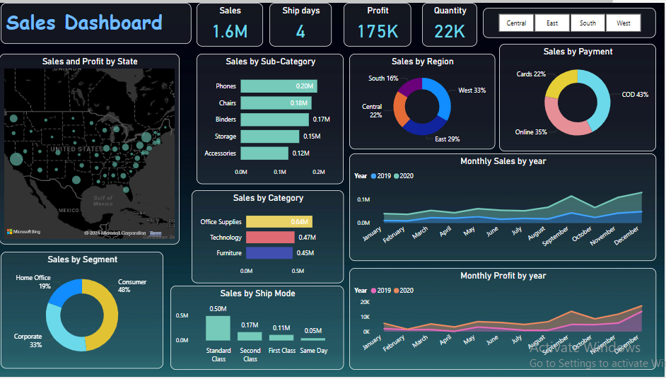
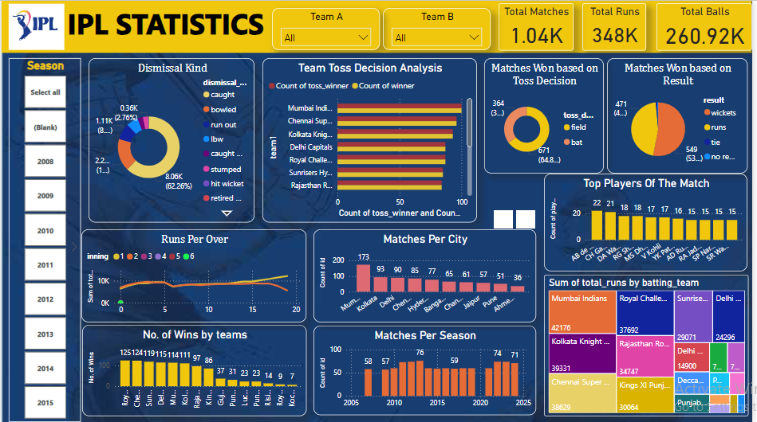
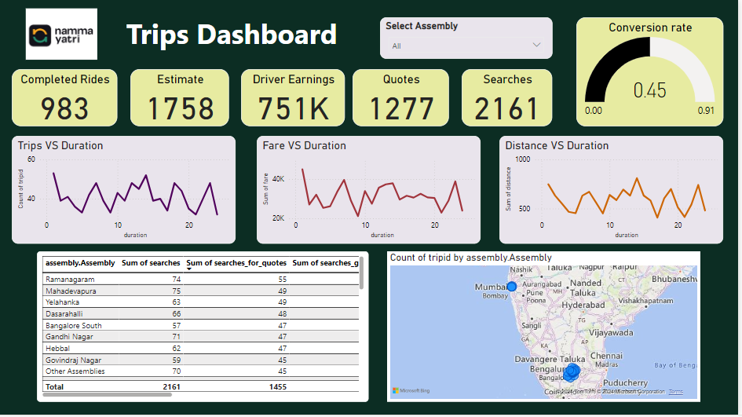

I am a passionate technology enthusiast with a B.Tech in Artificial Intelligence and Data Science from KJ Somaiya Institute of Technology. Skilled in SQL, Python, Power BI, and data visualization,
I thrive on turning complex data into actionable insights. My participation in Tata's job simulation on the Forage platform allowed me to work on a retail client project, enhancing my skills in Power BI, and real-world problem-solving.
I also completed a data analysis internship with YBI Foundation. Driven by curiosity and a love for innovation, I am excited to apply my expertise in a consulting role.
Welcome to my portfolio, where you can explore my journey and the impactful projects I've contributed to.
Skills
- Python
- SQL
- Data Analysis
- Power BI
- Excel
- Visualizations
- Dashboards
- Communication

The Healthcare Dashboard is an intuitive and interactive tool designed to provide comprehensive insights into various aspects of healthcare management.
It aims to enhance decision-making by offering a clear visualization of key performance indicators (KPIs) and trends related to patient care, hospital operations, and financial performance.

The sales analysis dashboard provides comprehensive insights into profit trends, sales performance, and different categories and subcategoris and forcasting future sales , enabling data-driven decision-making.
By visualizing key metrics and identifying patterns, the dashboard helps optimize sales strategies and uncover growth opportunities.

Discover insights from one of the world's most exciting cricket leagues with my IPL statistics dashboard. This project showcases comprehensive data analysis and visualization, providing a deep dive into match outcomes, player performances, and seasonal trends.
A collection of SQL projects demonstrating various database management tasks, including data querying, manipulation, and analysis. Each project showcases different SQL techniques like joins, subqueries, and aggregations, aimed at solving real-world data problems efficiently.
Python projects that are focused on data analysis. Each project includes data cleaning, visualization, and statistical analysis using libraries like Pandas, NumPy, and Matplotlib. The work here demonstrates practical applications of data analysis techniques to uncover insights and trends from real-world datasets.

Developed an interactive Trips Analysis Dashboard, providing insights into travel patterns and trends through data visualization. This dashboard showcases the ability to transform raw travel data into actionable insights for decision-making.